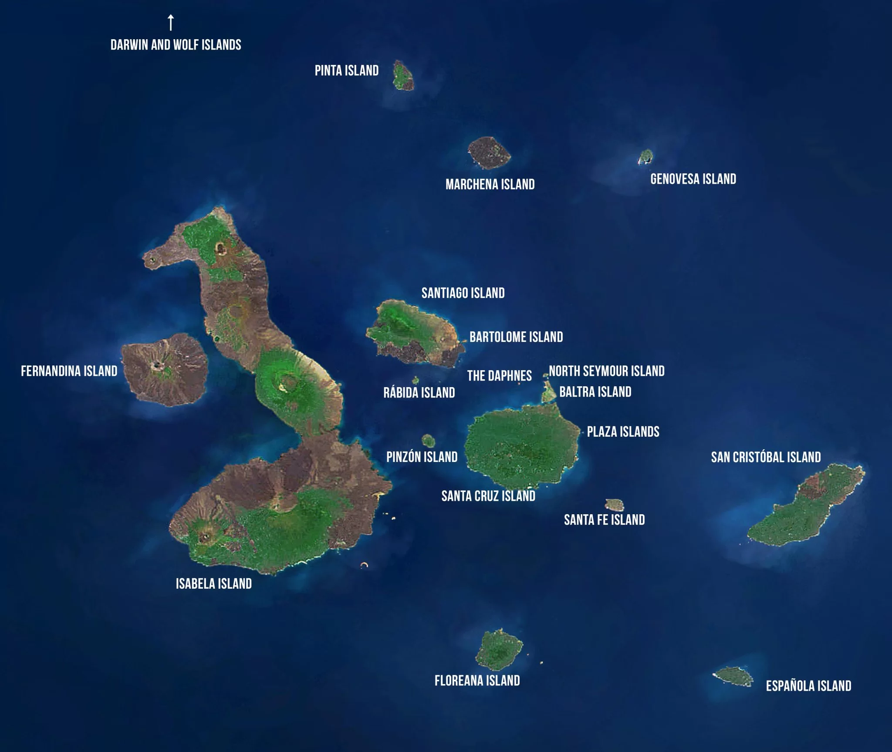

Part One
In 1831, Charles Darwin (aged 22) was offered the position of naturalist aboard HMS Beagle, a Royal Navy survey ship that was about to travel around the world. The voyage lasted nearly five years and changed how scientists understood life on Earth.
Darwin spent the journey observing and collecting specimens across South America, the Pacific Islands and beyond. His observations started to challenge the idea that species were fixed and never changed.
HMS Beagle arrived at the Galapagos on 15 September 1835. Darwin spent about five weeks across four islands (San Cristobal, Floreana, Isabela and Santiago) before the ship left on 20 October 1835.
Figure 1: The route of HMS Beagle during Darwin's 1831–1836 voyage. The Galapagos Islands (red star) were visited from 15 September to 20 October 1835 — the key turning point of the voyage.
Darwin did not have a sudden "eureka" moment in the Galapagos. The theory came together gradually after he returned to England in 1836. When John Gould confirmed that all the different birds Darwin collected were actually related finches, it was a key turning point.
Darwin also read Thomas Malthus's essay on population, which argued that populations always grow faster than their food supply, causing competition. Darwin applied this idea to nature: individuals with traits that help them survive are more likely to reproduce and pass on those traits, slowly changing the population over time.
Darwin spent over 20 years refining his theory before publishing On the Origin of Species in 1859.
Individuals within a population show heritable differences in their traits.
Populations produce more offspring than the environment can support.
Individuals compete for limited food, space and other resources.
Individuals with useful traits survive and pass those traits on to offspring.
Part Two
The tour visits three islands chosen because each one shows a different aspect of evolution and adaptation. Total duration is 9 days.
Route: Santa Cruz (Days 1–3) → Espanola (Days 4–6) → Isabela (Days 7–9)
Students can observe giant tortoises in their natural highland habitat and speak to scientists at the research station about current conservation work.
| Organism | Adaptation type | Explanation |
|---|---|---|
| Galapagos Giant Tortoise Chelonoidis niger |
Structural Physiological Behavioural | Dome-shaped shells on humid islands, saddle-backed shells on dry islands where the neck needs to stretch up to reach cacti. Tortoises can also survive up to a year without food or water, and they migrate between highland and lowland areas to regulate body temperature and access food. |
| Prickly Pear Cactus Opuntia echios |
Structural Physiological | On islands with tortoises and iguanas, the cactus evolved to grow tall with a woody trunk so the edible pads are out of reach of ground animals. It also uses CAM photosynthesis, opening its stomata at night instead of during the day to reduce water loss. |
Espanola shows what happens when populations are isolated for long enough. The organisms here have changed so much from their ancestors that they are now completely different species.
| Organism | Adaptation type | Explanation |
|---|---|---|
| Waved Albatross Phoebastria irrorata |
Structural Physiological Behavioural | A wingspan of up to 2.4 m lets the albatross soar over the ocean for months at a time, using wind gradients to travel long distances with minimal energy. Physiologically, albatrosses have a specialised nasal tube that enhances their sense of smell, allowing them to detect food sources like fish and squid across hundreds of kilometres of open ocean — a critical survival advantage in a featureless environment. Albatrosses also perform complex synchronised dances to form long-term mating pairs, which improves offspring survival rates. |
| Marine Iguana Amblyrhynchus cristatus |
Structural Physiological Behavioural | A flat tail acts as a rudder for swimming, and a blunt downward-facing snout scrapes algae off underwater rocks. Specialised nasal glands remove excess salt by sneezing it out through the nostrils. After diving in cold water, iguanas bask together on lava rocks to warm up faster. |
| Organism | Adaptation type | Explanation |
|---|---|---|
| Galapagos Penguin Spheniscus mendiculus |
Structural Physiological Behavioural | Unlike Antarctic penguins, Galapagos penguins have thinner feathers to avoid overheating in a tropical climate. Their moult is timed to match food-rich periods linked to the Humboldt Current. On hot days they hold their flippers out from their body to lose heat and they seek shade under rocks. |
| Flightless Cormorant Nannopterum harrisi |
Structural Physiological Behavioural | The only cormorant in the world that cannot fly. With no land predators on Isabela, large flight muscles had no survival benefit, so over many generations wings became much smaller — a structural change driven by relaxed selection. Physiologically, the cormorant has a higher concentration of oxygen-storing myoglobin in its muscles compared to flying cormorant species, improving its breath-holding capacity and diving efficiency in the cold Humboldt Current upwellings. Behaviourally, the birds still hold their vestigial wings out to dry after diving, a retained ancestral behaviour that no longer serves its original aerodynamic purpose. |
Tour Route Map

Part Three
Peter and Rosemary Grant from Princeton University conducted one of the most important long-term studies in evolutionary biology. Starting in 1973, they spent decades on Daphne Major, a small volcanic island in the Galapagos, studying Darwin's finches. Their work was the first time scientists directly measured natural selection happening in a wild population.
The 1977 drought (abiotic factor): A severe drought wiped out most small, soft seeds which were the preferred food of medium ground finches. Only large, hard seeds were left. Finches with bigger, deeper beaks could crack these seeds more easily and survived at higher rates. The average beak depth increased by about 0.5 mm in just one generation. This was caused by a change in rainfall, which is an abiotic factor.
The 1983 El Nino reversal (abiotic factor): Heavy rain brought lots of small seeds back. Smaller-beaked finches now had an advantage because they could eat more efficiently. Beak size shifted back toward smaller. This showed that natural selection can go in reverse when conditions change.
Competition between species (biotic factor): In 2004, a drought happened at the same time a larger finch species (Geospiza magnirostris) arrived on Daphne Major. The larger species outcompeted the medium ground finch for big seeds, so selection now favoured smaller beaks. This showed that biotic factors like competition can drive natural selection just as strongly as abiotic factors.
Before the Grants' research, most scientists assumed natural selection was too slow to observe within a human lifetime — it was thought to take thousands or millions of years. The Grants proved this assumption wrong. Their study was the first time natural selection was directly measured in a wild population as it occurred, making it one of the most important pieces of evidence for evolutionary theory ever produced.
By measuring nearly every bird on Daphne Major for over 40 years, they showed that selection pressure from a single environmental event — such as a drought — can cause statistically significant, heritable changes in a population in under two years. Crucially, the study also demonstrated that evolution is not a one-way process: populations can shift in one direction and then reverse when conditions change, as seen in the 1977 drought followed by the 1983 El Niño.
The Grants' work directly confirmed Darwin's theory of natural selection using real measurements from a wild population, and it showed that both abiotic factors (like rainfall and temperature) and biotic factors (like competition between species) can independently drive evolutionary change. Their findings remain a cornerstone of modern evolutionary biology.
Figure 2: Mean beak depth (mm) of medium ground finch on Daphne Major — based on Grant & Grant (2002)
Y-axis: Mean beak depth (mm) | X-axis: Year and key selection event
Note: Values are approximate, based on Grant & Grant (2002). Baseline is 8.0 mm; chart shows relative changes in mean beak depth across key selection events.
Sources
BBC Earth (2013) David Attenborough's Galapagos [Television documentary series]. London: BBC.
Darwin, C. (1845) Journal of Researches into the Natural History and Geology of the Countries Visited during the Voyage of H.M.S. Beagle Round the World. 2nd edn. London: John Murray.
Darwin, C. (1859) On the Origin of Species by Means of Natural Selection. London: John Murray.
Galapagos Conservation Trust (2023) Species of the Galapagos. Available at: https://www.galapagosconservation.org.uk/wildlife/ (Accessed: May 2026).
Galapagos National Park Directorate (2024) Visitor Sites and Island Information. Available at: https://www.galapagos.gob.ec/ (Accessed: May 2026).
Grant, P.R. and Grant, B.R. (2002) 'Unpredictable evolution in a 30-year study of Darwin's finches', Science, 296(5568), pp. 707-711. Available at: https://doi.org/10.1126/science.1070315.
Grant, P.R. and Grant, B.R. (2014) 40 Years of Evolution: Darwin's Finches on Daphne Major Island. Princeton: Princeton University Press.
Kricher, J. (2006) Galapagos: A Natural History. Princeton: Princeton University Press.
Nowak, M. (2016) Encyclopedia of the Galapagos Islands. Charles Darwin Foundation. Available at: https://www.darwinfoundation.org/ (Accessed: May 2026).
Weiner, J. (1994) The Beak of the Finch: A Story of Evolution in Our Time. New York: Alfred A. Knopf.
All sources were checked using the CRAAP test (Currency, Relevance, Authority, Accuracy, Purpose) before being included. Peer-reviewed journal articles and publications from established research institutions were given priority.